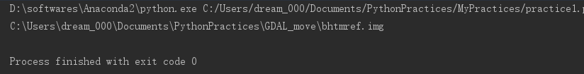

Welcome to exchange and study！
With the popularity of python, it has become a trend to use Python for remote sensing image processing. There are many excellent libraries under python, which make it easy for researchers to start. Next, the author gives a brief introduction to GDAL library which is often used in Python reading of remote sensing image, so as to help beginners get started quickly.
PS : The following code is written with python 2.7, which is similar to Python 3.x.
1. Using GDAL library to read JPG format image
The specific code is as follows：
from osgeo import gdal
from osgeo.gdalconst import *
gdal.AllRegister()
ds=gdal.Open("C:\Users\dream_000\Desktop\scenery.jpg",GA_ReadOnly)
print ds.GetDriver().ShortName
print ds.RasterXSize
print ds.RasterYSize
print ds.RasterCount
The operation results is as follows：
2. Using the GDAL library to read remote sensing image file
The specific code is as follows：
from osgeo import gdal
from osgeo.gdalconst import *
gdal.AllRegister()
ds=gdal.Open("C:\\Users\\dream\\Documents\\PythonPractices\\GDAL\\bhtmref.img",GA_ReadOnly)
print ds.GetDriver().ShortName
print ds.RasterXSize
print ds.RasterYSize
print ds.RasterCount
print ds.GetProjectionRef()
adfGeoTransform=ds.GetGeoTransform()
print adfGeoTransform[0]
print adfGeoTransform[3]
print adfGeoTransform[1]
print adfGeoTransform[5]
band=ds.GetRasterBand(1)
data=band.ReadRaster(0,0,ds.RasterXSize,1,ds.RasterXSize,1,band.DataType)
The operation results is as follows：
3.Using Matplotlib to display remote sensing image
The specific code is as follows：
from osgeo import gdal
from osgeo.gdalconst import *
gdal.AllRegister()
ds=gdal.Open("C:\\Users\\dream\\Documents\\PythonPractices\\GDAL\\bhtmref.img",GA_ReadOnly)
cols=ds.RasterXSize
rows=ds.RasterYSize
bands=ds.RasterCount
import matplotlib.pyplot as plt
band1 = ds.GetRasterBand(1)
b1 = band1.ReadAsArray(0,0,cols,rows)
plt.imshow(b1, cmap='gist_earth')
plt.show()
The operation results is as follows：
4. Various function descriptions in GDAL Library
eg.1. The specific code is as follows：
from osgeo import gdal
# from osgeo.gdalconst import *
dateset=gdal.Open("C:\\Users\\dream_000\\Documents\\PythonPractices\\GDAL_move\\bhtmref.img")
print dateset.GetDescription()
The operation results is as follows：
The image description here is the path name of the image. Different datasets may have different descriptions.
eg.2.- RasterCount: 获得栅格数据集的波段数
- GetRasterBand: 获得栅格数据集的波段
- RasterXSize: 图像的宽度(X 方向上的像素个数)
- RasterYSize: 图像的高度(Y 方向上的像素个数)
from osgeo import gdal
from osgeo.gdalconst import *
ds=gdal.Open("C:\\Users\\dream_000\\Documents\\PythonPractices\\GDAL_move\\bhtmref.img")
print ds.RasterCount
print ds.GetRasterBand
print ds.RasterXSize
print ds.RasterYSize
The operation results is as follows：
- ReadRaster: 读取图像数据(以二进制的形式)
- ReadAsArray: 读取图像数据(以数组的形式)
help(ds.ReadRaster) help(ds.ReadAsArray)
These two functions are very important. They read the image data directly.
eg.4.
from osgeo import gdal
from osgeo.gdalconst import *
ds=gdal.Open("C:\\Users\\dream_000\\Documents\\PythonPractices\\GDAL_move\\bhtmref.img")
print ds.ReadAsArray(1,1,3,3)
The operation results is as follows：
It can be seen that after reading the image data in matrix format, six three row and three column matrices will be output, each matrix represents a band, so we can read out the data in the image that is located at 1,1, width with 3 and height with3.
eg.5. The display precision of matrix
#from __future__ import division
from osgeo import gdal
from osgeo.gdalconst import *
gdal.AllRegister()
ds=gdal.Open("C:\\Users\\dream_000\\Documents\\PythonPractices\\GDAL_move\\bhtmref.img",GA_ReadOnly)
#import numpy as np
#import matplotlib.pyplot as plt
cols=ds.RasterXSize
rows=ds.RasterYSize
bands=ds.RasterCount
band1=ds.GetRasterBand(1)
band2=ds.GetRasterBand(2)
band3=ds.GetRasterBand(3)
band4=ds.GetRasterBand(4)
band5=ds.GetRasterBand(5)
band7=ds.GetRasterBand(6)
b1=band1.ReadAsArray(0,0,cols,rows)
b2=band2.ReadAsArray(0,0,cols,rows)
b3=band3.ReadAsArray(0,0,cols,rows)
b4=band4.ReadAsArray(0,0,cols,rows)
b5=band5.ReadAsArray(0,0,cols,rows)
b7=band7.ReadAsArray(0,0,cols,rows)
b12=(b4-b3)/(b3+b4)
print 'b3=',b3
print 'b4=',b4
print 'b4-b3=',b4-b3
print 'b4+b3=',b4+b3
print '(b4-b3)/(b4+b3)=',b12
The operation results is as follows：
It can be seen that the output (b4-b3) / (B4 + B3) final results are all 0, while the values in B1, B2, etc. are integer type, so they are also integer type when running division. Therefore, the following print output value is 0.
The solution to this situation is: write from __future__ import division at the beginning of the file. After adding the above sentence, let’s look at the running results:
from __future__ import division
from osgeo import gdal
from osgeo.gdalconst import *
gdal.AllRegister()
ds=gdal.Open("C:\\Users\\dream_000\\Documents\\PythonPractices\\GDAL_move\\bhtmref.img",GA_ReadOnly)
import numpy as np
import matplotlib.pyplot as plt
cols=ds.RasterXSize
rows=ds.RasterYSize
bands=ds.RasterCount
band1=ds.GetRasterBand(1)
band2=ds.GetRasterBand(2)
band3=ds.GetRasterBand(3)
band4=ds.GetRasterBand(4)
band5=ds.GetRasterBand(5)
band7=ds.GetRasterBand(6)
b1=band1.ReadAsArray(0,0,cols,rows)
b2=band2.ReadAsArray(0,0,cols,rows)
b3=band3.ReadAsArray(0,0,cols,rows)
b4=band4.ReadAsArray(0,0,cols,rows)
b5=band5.ReadAsArray(0,0,cols,rows)
b7=band7.ReadAsArray(0,0,cols,rows)
b12=(b4-b3)/(b3+b4)
print 'b3=',b3
print 'b4=',b4
print 'b4-b3=',b4-b3
print 'b4+b3=',b4+b3
print '(b4-b3)/(b4+b3)=',b12
You can see that the decimal places are displayed, and the results are shown as follows:
As can be seen from the above figure, since the numbers after NDVI are all between 0 and 1, it is obvious that the image difference is large when it is used for image display.